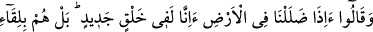
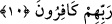
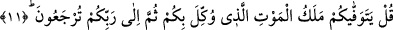

en güzel karşılıkla mükâfatlandırır. Bu mükâfât, avam için cennetler, cennetlerin
dereceleri ve ebedî nîmetleridir. Havastan olan kimseler için ise ilâhî
kurbiyyet/yakınlık makamları, O’na vuslat nîmeti ve O’nun ebedî tecellîsidir.
Yüce Allah’tan, bizi hakları zayi etmekle, istîdadları bozmakla ve yeryüzünde fesad
çıkarmaya çalışmakla yerdiği kimselerden değil, her an şükür ve tâat içinde bulunmakla
övdüğü kimselerden kılmasını niyaz ederiz.
10. “Toprağın içinde kaybolduğumuz zaman, gerçekten (o vakit) biz mi yeniden
yaratılacağız?” derler. Doğrusu onlar Rablerine kavuşmayı inkâr etmektedirler.
Öldükten sonra yeniden diriltilmeyi inkâr ederek Übey b. Halef ve benzeri Kureyş
kâfirleri: “Toprağın içinde kaybolduğumuz” yâni helak olduğumuz ve yerin
toprağından ayırt edilemeyecek kadar onunla karışmış bir toprak hâline geldiğimiz veya
toprağa defnedilerek kaybolduğumuz, yâni suyun süte karıştığında birbirinden fark
edilemediği gibi bizim uzuvlarımızın toprağının yeryüzünün toprağıyla farkı kalmadığı
ve insanların gözleri önünden gittiğimiz “zaman, gerçekten (o vakit) biz mi yeniden
yaratılacağız?” yâni ölümümüzden ve yok oluşumuzdan sonra tekrar diriltilecek ve
ölümümüzden önce olduğumuz gibi tekrar diriler mi olacağız? Yâni bu
yadırganacak/kabul edilemeyecek ve şaşılacak bir durumdur! Yâni, toprak olduğumuzda
yeniden yaratılmayacağız. “derler.” Çünkü onlar, ölümü kabul ediyor ve gözleriyle
görüyorlardı. Onlar ancak öldükten sonra diriltilmeyi inkâr ediyorlardı. Âyetteki inkâr
yollu soru, ölüm hakkında olmayıp öldükten sonra diriltilmeye yöneliktir.
Sonra Allah Teâlâ, sözün akışını değiştirdi ve onların yeniden diriltilmeyi inkâr
etmelerini açıklamaktan daha ağır ve fena bir konuyu; onların sonuçta Allâh’ın huzuruna
çıkarılacaklarını ve âhirette karşılaşacakları korkunç halleri inkâr etmelerini
açıklamaya geçti ve şöyle buyurdu:
“Doğrusu” söyledikleri gibi değildir; bilakis “onlar Rablerine kavuşmayı” ebediyet
yurdu olan âhireti “inkâr etmektedirler.” Allâh’a kavuşmak, kıyâmetten ve Allâh’ın
huzuruna dönmekten ibârettir. Kim Allâh’a kavuşmayı inkâr ederse, Allah kendisine
gazablı olduğu halde O’na kavuşur. Kim de O’na kavuşmayı kabul ederse, Allah
kendisine merhametli olduğu halde O’na kavuşur.